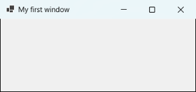
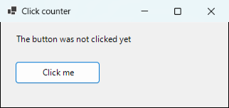
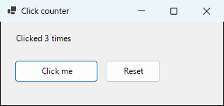

Your first window
Build a window in four small steps — an empty form, a label and a button, an event that counts clicks, and the same program written without the helper functions.
What you will learn#
- the parts of a Windows Forms program: runtime, form, controls, events, message loop,
- the helper functions
uiForm,uiLabel,uiButton,uiRun, - why event code can only see global variables,
- what the helpers do, by writing the program without them.
Windows Forms in one minute#
Windows Forms is the classic way to build desktop windows in .NET. A window is a Form. Things in it — labels, buttons, text boxes — are controls. A control is an object with properties (Text, Location, Size) and events (Click). The program runs a message loop: it waits for the user to do something, runs your code, and waits again until the window closes.
Step 1: the smallest window#
# Your first window, step 1: the smallest window
load "dotnet.ring"
using {
"System.Drawing"
"System.Windows.Forms"
}
oForm = uiForm("My first window",320,120)
uiRun(oForm) # show the window and wait until the user closes it
- The
using { }block comes first. Because it namesSystem.Windows.Forms, it starts the Windows desktop runtime and makes the Ring thread suitable for windows (this is whatdnUseDesktop()does). uiForm("My first window",320,120)makes a form with a title and a client area of 320 × 120 pixels, centered on the screen.uiRun(oForm)shows the window and waits. The program continues after the window is closed.
Step 2: a label and a button#
# Your first window, step 2: a label and a button
load "dotnet.ring"
using {
"System.Drawing"
"System.Windows.Forms"
}
oForm = uiForm("Click counter",320,120)
oLabel = uiLabel(oForm,"The button was not clicked yet",20,15,280,24) # parent, text, x, y, width, height
oButton = uiButton(oForm,"Click me",20,55,120,32,"") # no code yet for the click
uiRun(oForm)
uiLabel(parent, text, x, y, width, height) and uiButton(parent, text, x, y, width, height, code) create a control and put it into the form. The position x, y is measured in pixels from the top-left corner of the form. The last argument of uiButton is the Ring code to run when the button is clicked; here it is empty, so the button does nothing yet.
Step 3: the button does something#
# Your first window, step 3: the button does something - events and global variables
load "dotnet.ring"
using {
"System.Drawing"
"System.Windows.Forms"
}
# The code of an event runs later, outside this part of the program: it can only see GLOBAL variables.
# So the controls and the counter are global variables, created here at the top.
oForm = ""
oLabel = ""
nClicks = 0
func main
oForm = uiForm("Click counter",320,120)
oLabel = uiLabel(oForm,"The button was not clicked yet",20,15,280,24)
uiButton(oForm,"Click me",20,55,120,32,"clicked()") # the click calls the function clicked()
uiButton(oForm,"Reset",150,55,80,32,"resetCount()")
uiRun(oForm)
func clicked
nClicks++
oLabel.Text = "Clicked " + nClicks + " times"
func resetCount
nClicks = 0
oLabel.Text = "The button was not clicked yet"
The important rule: events see only globals#
"clicked()" is a text of Ring code. Ring runs it later, when the user clicks, outside the place where it was written. At that moment the local variables of main are gone. Therefore:
The code of an event can only use global variables. Create the controls and the data of the program as globals at the top of the file (oLabel = "", nClicks = 0), then fill them inside func main.
clicked() is an ordinary function. It changes the counter and writes the new text into the label (oLabel.Text = ...). Assigning to a property (Text) changes what you see.
The program tests itself#
The checks of this program are in a separate file, selftest/ch10_counter.ring, so the program above stays short. Its function selfTest() clicks the button three times with PerformClick() and checks the label with dnAssert. Run ring ch10_counter.ring --selftest and the window opens, clicks, checks and closes by itself. The same idea tests every sample and application of the package (see Testing).
Step 4: without the helpers#
The helpers are only short-cuts. This program builds the same window with the real classes, so you can see what is going on:
# Your first window, step 4: the same window without the helper functions - what uiForm, uiLabel and uiButton do
load "dotnet.ring"
using {
"System.Drawing"
"System.Windows.Forms"
}
oForm = ""
oLabel = ""
oButton = ""
nClicks = 0
func main
# every control is an object of a class, configured with properties inside braces
oForm = new Form() {
Text = "Click counter (no helpers)"
ClientSize = new Size(320,120)
StartPosition = "CenterScreen" # an enum is written as a text
}
oLabel = new Label() {
Text = "The button was not clicked yet"
Location = new Point(20,15)
Size = new Size(280,24)
}
oButton = new Button() {
Text = "Click me"
Location = new Point(20,55)
Size = new Size(120,32)
setClickEvent("clicked()") # an event: Ring code that runs on click
}
oForm.Controls.Add(oLabel)
oForm.Controls.Add(oButton)
uiTest(oForm,"oButton.PerformClick() dnAssert('one click',oLabel.Text,'Clicked 1 times')")
new Application().EnableVisualStyles()
new Application().Run(oForm) # the message loop: the program waits for the user here
uiEnd()
func clicked
nClicks++
oLabel.Text = "Clicked " + nClicks + " times"
| Helper | What it really does |
|---|---|
uiForm(title,w,h) | new Form(), then Text, ClientSize = new Size(w,h), StartPosition = "CenterScreen" |
uiLabel(...) | new Label(), then Text, Location = new Point(x,y), Size, then oForm.Controls.Add(...) |
uiButton(...) | new Button(), the same, and setClickEvent(code) |
uiRun(oForm) | Application.EnableVisualStyles() and Application.Run(oForm) (the message loop) |
Note how the properties are written inside braces: new Label() { Text = "..." } means "create the label and set these properties". The StartPosition is an enum, written as a text: "CenterScreen".
What you learned#
| Idea | Example |
|---|---|
| start the desktop runtime first | using { "System.Windows.Forms" } |
| a form and controls | uiForm, uiLabel, uiButton |
| positions and sizes in pixels | 20, 15, 280, 24 |
| an event is Ring code in a text | "clicked()" |
| events see only globals | oLabel, nClicks at the top |
| the same without helpers | new Form() { ... } |
Exercises#
- Add a third button,
Add 10, that adds ten to the counter. - Make the label red when the counter is above 5 (
oLabel.ForeColor = new Color().Red). - Add a second label that shows
evenorodd. - Change the form so that it cannot be resized (
FormBorderStyle = "FixedDialog",MaximizeBox = False).